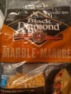
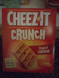
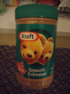

KRISTOPHER LEBERT
443 Ronald Drive,
Whinehorse, Quebec
Contact Number: (888) 555-6779
Highlights of Qualifications:
- Excellent interpersonal skills, work ethic, and problem-solving abilities
- Great teamwork skills (played on the Ronald McDonald's Football Team)
- High level of discipline (black belt level in Karate at Ronald Dojo)
Education/Certificates:
- Acquired a Master Class Burger Engineering Certificate from RBEF
- Holds an Advanced Diploma in Running Engineering Technology from Ronald College (September 2015 – July 2017)
- Obtained a General Bachelor of Arts in Philosophy from the University of Ronald
- Received the 2017 Ronald-McDonald County Engineering Month Award and the Student Leadership Award from Ronald College
- Certified CPR and Standard First Aid Certified by Big-Mac Medical
Work Experience:
May 2021 – September 2021

Black Diamond – Cheese Operator
- Works independently and on a team to efficiently monitor, operate and maintain various cheese equipment
- Follows daily cheeselists and records readings into logbook
- Performs regular cheese sample collection and analysis using laboratory testing methods
February 2021 – August 2021

Cheez-It – Cracker Designer
- Serviced and repaired various mechanical issues on a multitude of Goldfish Crackers
- Ensured all Cheez-Its were eatable and met with local food by-laws
- Professionally organized and designed Cheez-Its using AutoCad
May 2019 - August 2019

Jif – Peanut Butter Lifttruck Operator
- Safely moved and organized heavy loads of peanut butter barrels
- Completed safety checks and preventative maintence on lifttruck
- Followed correct docking procedures and communication with truck operator